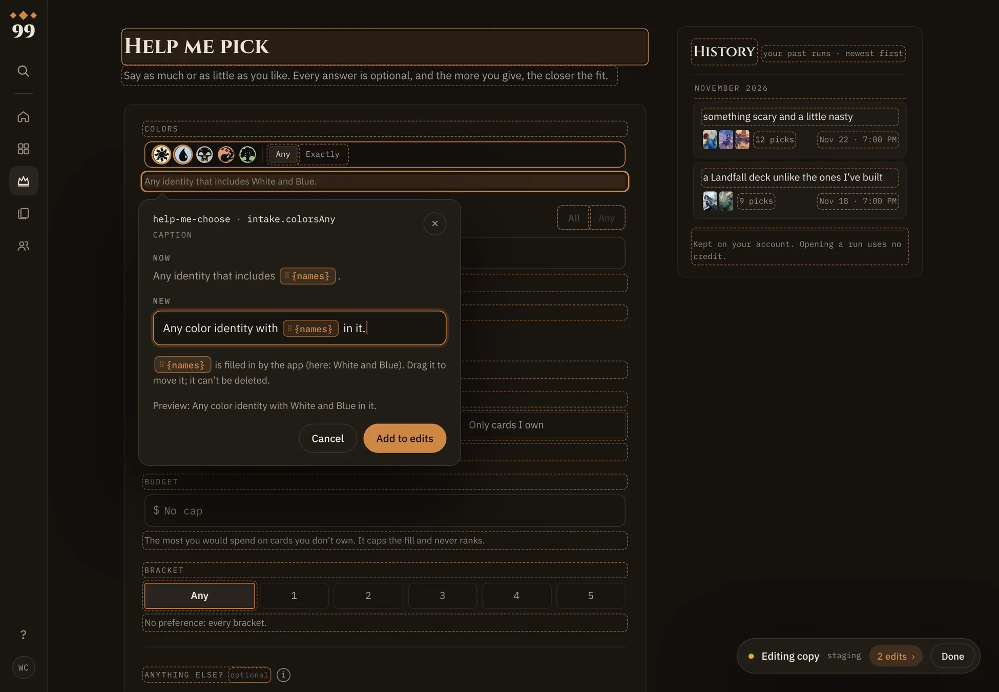
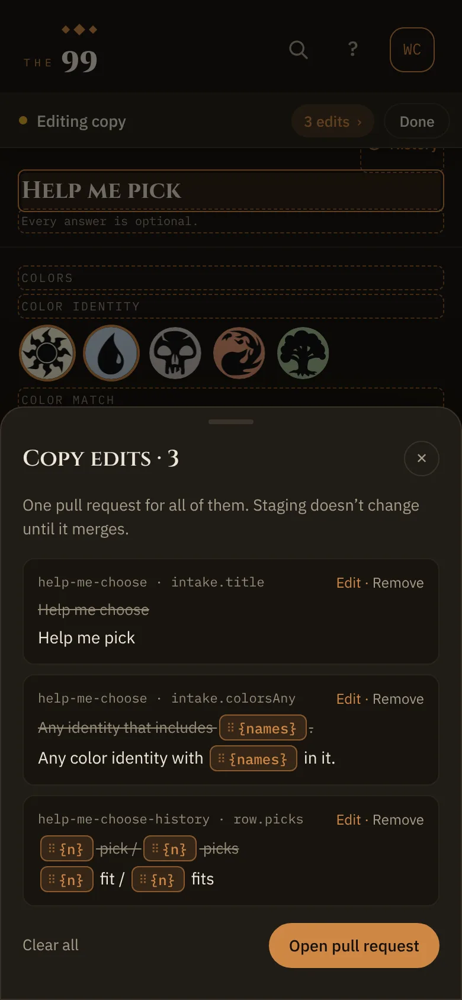

An admin-only, staging-only mode over every page: click visible text, edit it in place, and a batch of edits becomes one pull request. Drawn over Help me choose rendered from main; the pages themselves don’t change. Boards: this one, Phone (12 states) and Desktop (12 states).

Editor with a fill-in, desktop
The popover sits under its line; the page keeps its layout under the outlines.

Tray, phone
Three edits, one pull request.
1 · Admins only, staging only
2 · Visible text only
3 · One tray, one PR
4 · Current wording, chips, variations, live rules
5 · Read-only text is visibly not editable
C1 · Marking editable text
C2 · Where the toggle lives
C3 · Popover or sheet
C4 · The tray
C5 · After Submit
Q1 · Same words under two keys
Q2 · How long the tray keeps edits
Q3 · Links while the mode is on
Q4 · Preview edits on the page
E · How it could work